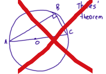
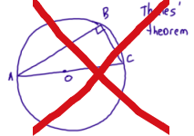
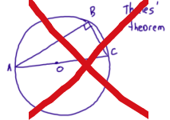

Examples of input that would NOT be recognized correctly.
MyScript can recognize different types of input, but except for Analyzer (Shape + Text), these types cannot be combined in a single request to the same URL. Each request is for a particular type of service.

Examples of input that would NOT be recognized correctly.
In the above examples, text, shapes and math expressions are combined in the same request, which is not currently possible. Your application needs to have some way of ensuring that different elements are sent in distinct requests.
The Text recognition service:
The Math recognition service:
There is one specific case that is not supported:
| Unsupported case | Description | Supported alternative |
|---|---|---|
 |
This is not currently supported. The second elements are too close to the first and will not give a correct result (the segmentation of the elements is likely to be incorrect). This type of equation can be recognized but care must be taken to provide adequate spacing. |  |
The Shape recognition service:
Connectors will be created on the beautified shapes to make them as geometrically attractive as possible. If lines and shapes are very close, it will tend to make them touch to create an illusion of connection.
The Analyzer recognition service can recognize only 2 types of input: Shape and Text.
Examples of input that would NOT be recognized correctly.
The Analyzer recognition service:
Connectors will often be created on the beautified shapes to make them as geometrically attractive as possible. If lines and shapes are very close, it will tend to make them touch to create an illusion of connection.
Besides standard HTTP errors, some API-specific exceptions may occur.
| EXCEPTION | DESCRIPTION |
|---|---|
TextApiParsingException |
There is incorrect input in the JSON request. |
NotImplementedMethodException |
You have used bad syntax or used parameters etc that do not exist. |
BadIpAddressApplicationKeyException |
The filtering value is unknown or incorrect. |
InvalidApplicationKeyException |
You have used an application key that does not exist or is incorrect. |
RevokedApplicationKeyException |
Your application key is no longer valid or does not have appropriate permissions. |
ApplicationDeactivatedException |
This application is not currently active. Visit the account console to fix this if necessary. |
ContentTypeResourceNotFoundException |
A content type resource (used to restrict recognition to a specific type of linguistic input, such as city names) has been requested but is not present on the server. You may have misspelled it or asked for a resource that doesn't exist in that particular language. |
SKResourceNotFoundException |
A subset knowledge resource (used to restrict recognition to a specific set of characters) has been requested but is not present on the server. You may have misspelled it or asked for a resource that doesn't exist in that particular language. |
TextLanguageException |
You have asked for a language that is not supported by MyScript or the language code is incorrectly entered. |
RecognitionApiTimedOutException |
The processing of your request lead to a timeout in the recognition engine. |
IOException |
There is an internal server error. |